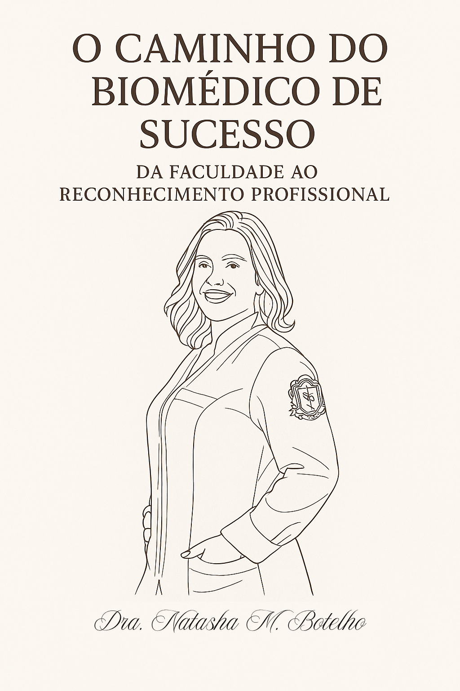

Sabonetes e cosméticos
Texturas delicadas, fragrâncias equilibradas e ativos funcionais que protegem a barreira cutânea. Ideal para rotinas diárias.

Biomédica Responsável
Beleza, ciência e natureza em harmonia com protocolos exclusivos da nossa biomédica responsável.
Graduada em Biomedicina, Habilitada em Imagenologia e Patologia Clínica (Análises Clínicas). Pós-graduada em Biomedicina Estética e Cosmetologia Clínica aplicada a disfunções Estéticas e Dermatológicas.
Idealiza produtos que combinam ciência e sensações, mantendo o compromisso com a saúde da pele e o seu bem-estar.

Quando escolhi cursar Biomedicina, imaginei um caminho claro, cheio de
oportunidades e reconhecimento. Pensava em jalecos, laboratórios modernos e uma
O Caminho do Biomédico de Sucesso: Da Faculdade ao Reconhecimento Profissional
Dra. Natasha M. Botelho
carreira promissora na área da saúde. Mas a realidade, logo percebi, era bem diferente
da fantasia que muitas faculdades vendem.
Entre provas, estágios, cobranças e inseguranças, me vi questionando muitas vezes:
"Será que estou no caminho certo?"
Se você também já se sentiu assim — perdida, sem saber qual área seguir ou como
conquistar seu espaço — este livro é para você.
A Biomedicina é, sim, uma profissão incrível. Versátil, dinâmica e com um enorme
potencial de crescimento. Mas para alcançar esse sucesso, é preciso mais do que um
diploma. É necessário estratégia, atitude e visão de futuro.
Este livro nasceu com o objetivo de te ajudar a enxergar a Biomedicina com mais
clareza e confiança. Nele, compartilho tudo o que aprendi, vivi e observei — desde o
período da faculdade até os desafios do mercado de trabalho — para que você não
precise andar no escuro como eu andei.
Texturas delicadas, fragrâncias equilibradas e ativos funcionais que protegem a barreira cutânea. Ideal para rotinas diárias.
Velas aromáticas e geleias corporais criam experiências completas que acalmam corpo e mente, baseados em pesquisas sobre aromaterapia.
Orientações da biomédica para combinar produtos e tratamentos caseiros.
Sugestões de produtos Aura
Sem backend: nossos kits artesanais já vêm prontos para a recomendação que combina com você.
Escolha suas opções para ver o produto indicado com imagem e link direto ao WhatsApp.
“Cada produto nasce de estudos com ingredientes naturais e testes de estabilidade, pensando em resultados reais e sensações memoráveis.”